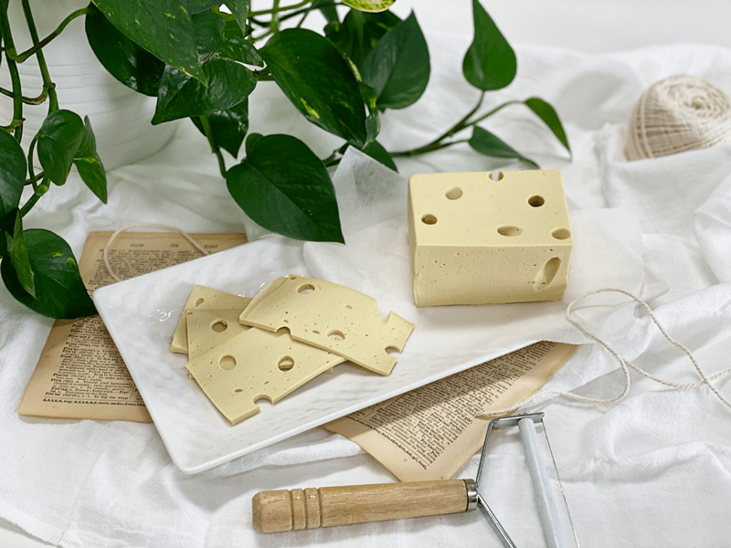
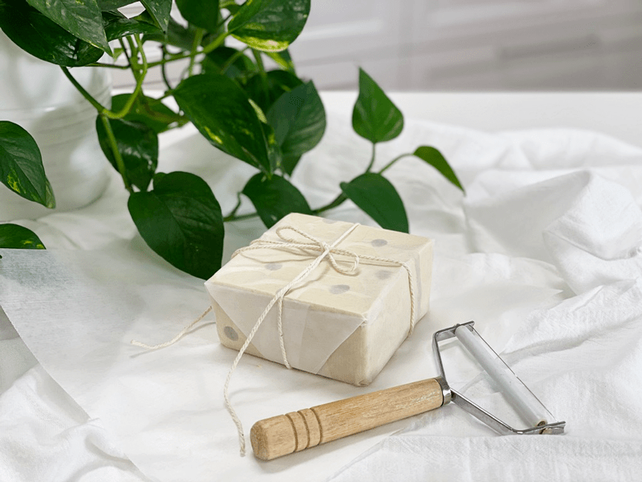

Swiss Cheese | Vegan | Oil-Free
As you are well aware, you don’t see dairy as an ingredient in raw recipes. Did you know that dairy is one of the top allergens? But there is a difference between a dairy allergy and dairy intolerance. You may be wondering why I am even talking about dairy since I don’t use it in my recipes. I just thought that it might be beneficial to share just a bit of what I have learned. We can never have too much knowledge.

So what is the difference? “Milk intolerance causes different symptoms and requires different treatment from a true milk allergy. Common signs and symptoms of milk protein or lactose intolerance include digestive problems, such as bloating, gas, or diarrhea, after consuming milk or products containing milk.”
“A milk allergy is when your immune system thinks dairy is a foreign invader and attacks it by releasing chemicals called histamines. Symptoms can range from wheezing problems to vomiting and diarrhea.” (source)
Outside of those symptoms, dairy can affect you in many other ways. For me, I break out on my face. I can always tell if dairy was snuck into my food – ah, the risks of eating out. Even the tiniest bit can bring on a pimple. So, if you ever notice a new symptom pop up or perhaps an old one that you can never quite shake and if any dairy is in your diet, you might want to try omitting it for 1-3 months and see if things clear up.

On to this cheese…. this recipe is vegan but not 100% raw. Agar is used, and it requires boiling water to dissolve and to activate its magic. Magic meaning, agar, is the crucial ingredient that gives that cheese texture to this recipe. The fun part is that you can use any mold to shape it in. If you have children, I think this would be a fun recipe to include them in on. Let them select the container for the shape, and within a very short time, they can see the fruit of their efforts. Nothing quite as satisfying as that.
As you know, Swiss cheese comes with holes in it, that is what gives it its unique look. Below, you will see some pictures of how I created those holes to make it look authentic. But that is entirely optional. On a side note, this cheese would make a great gift to give to friends and family who are vegan (or just like different cheeses). Wrap it in wax or parchment paper and tie it up with twine.
Enjoy and have fun with the process. Be sure to comment below. blessings, amie sue
 Ingredients:
Ingredients:
yields 4″x4″x2″ brick
- 1/2 cup (110 g) water
- 1/2 cup (75 g) cashews, soaked 2+ hours
- 1/4 cup (30 g) nutritional yeast
- 3 Tbsp (40 g) lemon juice
- 2 Tbsp (43 g) tahini
- 2 tsp (14 g) Dijon mustard
- 1/4 tsp (2 g) Himalayan pink salt
- 1/2 tsp (2 g) garlic powder
- 1 Tbsp (9 g) dried onion flakes
- 1/4 tsp (<1 g) ground dill weed
- 1 cup (226 g) water
- 1 1/2 Tbsp (11 g) agar powder or 5 Tbsp agar flakes
Preparation:
- Set aside a 3 cup container, or the mold of your choice to use as the mold for the cheese.
- In a high powered blender add, water, cashews, nutritional yeast, lemon juice, tahini, mustard, salt, garlic, onion flakes, garlic powder, and dill. Blend until the mix is completely smooth.
- Stop occasionally to test for grittiness.
- It can take 1-3 minutes, depending on the blender.
- In a small saucepan, bring 1 cup of water to boil. Slowly add the agar stirring with a whisk. Reduce the heat and simmer, often whisking, for 5 to 10 minutes, or until completely dissolved.
- Start the blender and create a vortex. Slowly pour a little into the blender, be careful not to splatter yourself. Working quickly. Scrape the sides. Process until completely smooth, scraping down the sides of the blender jar as necessary.
- Pour into a container and cool uncovered in the refrigerator.
- When completely cool, cover and chill several hours. To serve, turn out of the container and slice.
- Store covered in the refrigerator. It will keep 5 to 7 days.
- To make the “swiss holes,” I used a drinking straw and poked it in at different angles.
© AmieSue.com